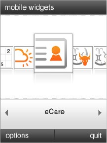
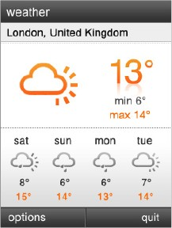
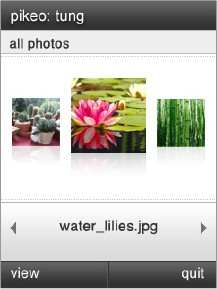
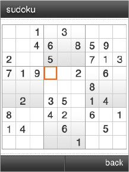

Introduction to Mobile Widgets
What is it?
Mobile Widgets is a mobile application which gives a fast and simple access to a set of mobile widgets.
These mobile widgets are a very short way to access news, fun and a multitude of Internet contents and services.
What are the end benefits of this service?
- Simple and direct access to contents and services (weather, news, finance, games,...).
- Ergonomic client software with easy navigation through Grid or carousel.
- Already installed on device with default widgets featured.
- Additional widgets available for download.
- Data included in many tariff plans. Low data usage for people who don't have data plans.
- Fast access to Internet services.
How does this product simplify or change the life of users?
- The user can keep in touch with his favorite Internet services in a few clicks.
- The widgets can be chosen from the catalog and installed very quickly.
- The user can discover mobile Internet through an optimized customer experience.
And more...
- Mobile Widgets application is embedded on devices ( more than 1 million !).
- Mobile Widgets can be downloaded over the air.
- Mobile Widgets exists in several versions:
- Mobile Widgets.
- Tiny Mobile Widgets for very low cost devices.
- Mobile Widgets can be adapted to different screen sizes (scalable capability).
Mobile Widgets framework is basically an environment to create and play fancy
rich media applications with WEB2.0 like features.
The key features are:
-
Comprehensive rich-media environment.
Create applications mixing video with 2D and 3D vector graphics, animation and interactivity.
Full javascript support for AJAX like interactions.
-
Optimized for mobile phones.
Designed from the beginning to use optimally actual phones capability and modern Java Virtual Machine potential.
-
Ultra light rich media applications.
Thanks to its optimum format, improve reactivity while shortening downloading times.
Mobile Widgets proposes a catalog of many widgets.
Example of widgets:
| Mobile Widgets carousel. |
Weather widget. |
|  |
 |
| |
| Pikeo widget. |
Sudoku widget. |
|  |
 |
You want your own application?
This site provide tools, documentations and examples to create your widgets.
Mobile Widgets manage service adaptation depending on:
- language (can fit the device language).
- country (the widgets catalog is different for each country).
- device (the design and size are different).
The SDK provides the tools for:
- integration of your widget in Mobile Widgets ( some "prototype" are reusable code like carousel, mosaic, options, textinputs,...).
- compile, test your widget with an emulator.
- deliver your widget.